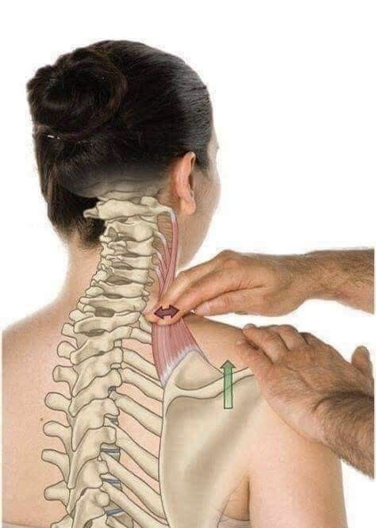

Contracturas
¿Qué es una contractura muscular?
Una contractura muscular es una contracción involuntaria, persistente y dolorosa de una o varias fibras musculares, que impide que el músculo se relaje de manera adecuada. Esta alteración genera una tensión anormal en la zona afectada, lo que puede provocar molestias, rigidez, limitación en el movimiento e incluso irradiación del dolor hacia otras áreas del cuerpo.
Causas frecuentes
Las contracturas pueden originarse por múltiples factores, entre los más comunes se encuentran: Sobrecarga muscular debido a esfuerzos físicos intensos o movimientos repetitivos. Estrés emocional, que genera tensión mantenida en determinadas zonas del cuerpo. Posturas incorrectas o prolongadas, especialmente frente a pantallas. Falta de hidratación, descanso o calentamiento previo a la actividad física. Exposición al frío, que puede provocar contracción refleja del músculo.
Síntomas
Dolor localizado o difuso. Sensación de rigidez o “nudo” palpable en el músculo. Disminución de la movilidad. En algunos casos, sensación de pesadez, hormigueo o irradiación del dolor.
Tratamiento
El abordaje de las contracturas suele incluir: Masoterapia profesional, que ayuda a relajar la musculatura, activar la circulación y reducir la tensión. Aplicación de calor local, para favorecer la vasodilatación y el alivio. Estiramientos suaves y progresivos. Reeducación postural y pautas ergonómicas. Hidratación adecuada y descanso.
Detectar y tratar una contractura a tiempo no solo alivia el dolor, sino que previene compensaciones y lesiones mayores. Un cuerpo relajado es un cuerpo que se mueve mejor, y en armonía.